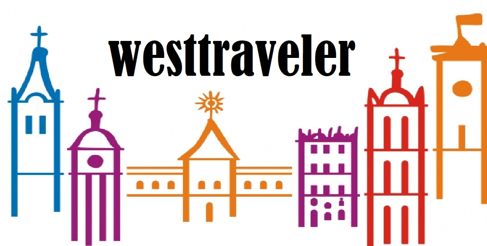

Ви можете знайти нас :
 https://www.instagram.com/dmitrashchukgalina/?hl=uk
https://www.instagram.com/dmitrashchukgalina/?hl=uk

Західна Україна багата на цікаві місця, тож ви точно не пожалієте, якщо
вирушите на відпочинок саме туди. Зібрали для вас ідеї для мандрів, під
час яких ви побачите як добре відомі туристичні маршрути, так і не менш
красиві куточки Західної України, про які знають не всі. Гайда в подорож!